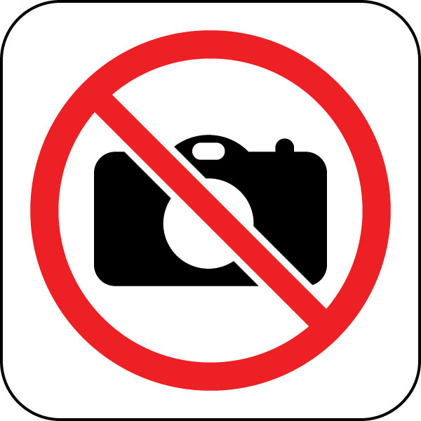

	<h1>Registro Fotogr&aacute;fico de visitantes</h1>
	
	<table><tr><td valign=top>
	<!-- First, include the JPEGCam JavaScript Library -->
	<script type="text/javascript" src="webcam.js"></script>
	<!-- Configure a few settings -->
	<script language="JavaScript">
		webcam.set_api_url( 'test.php' );
		webcam.set_quality( 90 ); // JPEG quality (1 - 100)
		webcam.set_shutter_sound( true ); // play shutter click sound
	</script>
	
	<!-- Next, write the movie to the page at 320x240 -->
	<script language="JavaScript">
		document.write( webcam.get_html(420, 420) );
	</script>
	
	<!-- Some buttons for controlling things -->
	<br/><form>
<!--		<input type=button value="Configurar..." onClick="webcam.configure()"> !-->
		&nbsp;&nbsp;
		<button type="button" onclick="take_snapshot()">

<br />Tomar Foto</button>
		
	</form>
	
	<!-- Code to handle the server response (see test.php) -->
	<script language="JavaScript">
		webcam.set_hook( 'onComplete', 'my_completion_handler' );
		function filename(path){
			path=path.substring(path.lastIndexOf("/")+ 1);
			return (path.match(/[^.]+(\.[^?#]+)?/) || [])[0];
		}

		function take_snapshot() {
			// take snapshot and upload to server
			document.getElementById('upload_results').innerHTML = '<h1>Cargando imagen...</h1>';
			webcam.snap();
		}
		
		function my_completion_handler(msg) {
			// extract URL out of PHP output
			if (msg.match(/(http\:\/\/\S+)/)) {
				var image_url = RegExp.$1;
				// show JPEG image in page
				var d = filename(image_url);
				
				document.getElementById('upload_results').innerHTML = 
					'<h1>La foto fue capturada correctamente en el sistema</h1>'+
					 '<center><strong>' + d + '</center></strong>' +
					'<center><table><tr><td></td><td>' + 
					'</td></tr></table></center>';			
				// reset camera for another shot
				webcam.reset();
			}
			else {
				document.getElementById('upload_results').innerHTML = 
					'<h1>Error al capturar la foto.</h1>'+
					'<h1>Consulte al administrador.</h1>'+
					'<center></center>';								
				    alert("Error: \n" + msg + "\nConsulte al administrador.");
				    webcam.reset();
			}
		}
	</script>
	</td><td width=50>&nbsp;</td><td valign=top>
		<div id="upload_results" style="background-color:#eee;"></div>
	</td></tr></table>
